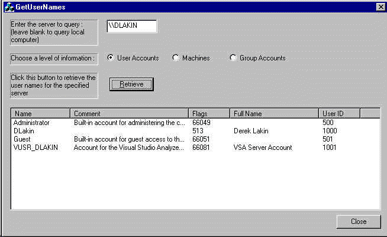

Как получить список пользователей с сервераАвтор: Derek Lakin  ОписаниеПример показывает, как пользоваться функцией NetQueryDisplayInformation, для получения специфической информации о пользователях, а так же представлен класс, который позволяет получить более общий доступ к данному сервису. Детальное описание функцииПрототип функции выглядит так: NET_API_STATUS NetQueryDisplayInformation( LPCWSTR ServerName, DWORD Level, DWORD Index, DWORD EntriesRequested, DWORD PreferredMaximumLength, LPDWORD ReturnedEntryCount, PVOID *SortedBuffer); Возвращаемый тип
Так же возможно возникновение ошибки со
значением 1722, которая соответствует Первый параметр Особый интерес представляет параметр Level. Этот параметр указывает уровень получаемой информации, и может иметь одно из следующих значений.
Так как нас интересует информация о пользователях, то устанавливаем данный параметр в 1. Теперь давайте посмотрим, как выглядит
структура typedef struct _NET_DISPLAY_USER { LPWSTR usri1_name; LPWSTR usri1_comment; DWORD usri1_flags; LPWSTR usri1_full_name; DWORD usri1_user_id; DWORD usri1_next_index; } NET_DISPLAY_USER, *PNET_DISPLAY_USER; Не будем вдаваться в подробности описания
каждого поля данной структуры. Так как нас
интересует только список пользователей, то
обратим внимание на два поля:
Использование функцииИтак, при использовании данного сервиса рассмотрим три основных его составляющих:
Параметры устанавливаются следующим образом: // Во-первых, нам необходимо наши строки в Unicode wide-character формат CString szServer = "\\\\MYSERVER"; // Сервер для запроса LPWSTR pWideServer; int nBytesSource = strlen(pString) * 2; // Количество WChars необходимых для сохранения полученных данных int nWCharNeeded = MultiByteToWideChar (CP_ACP, MB_PRECOMPOSED, pString, nBytesSource, NULL, 0); // Распределяем необходимое пространство памяти плюс 2 байта для '\0' pWideServer = (LPWSTR)GlobalAlloc (GPTR, (nWCharNeeded + 1) * 2); // Делаем преобразование nWCharNeeded = MultiByteToWideChar(CP_ACP, MB_PRECOMPOSED, pString, nBytesSource,(LPWSTR)pWideServer, nWCharNeeded); if (0L == nWCharNeeded) { pWideServer = NULL; } else { *(LPWSTR)(pWideServer + nWCharNeeded) = L'\0'; } nIndex = 0; // Индекс внутри списка пользователей DWORD dwCount; // Возвращённое количество ячеек void* pBuffer; // Буфер для хранения результатов NET_DISPLAY_USER* ndu; // Информация о пользователе DWORD dwResult, i; // Код завершения и индекс Далее, для получения результатов используем следующий код: do { dwResult = NetQueryDisplayInformation ((LPCWSTR)pWideServer, 1, nIndex, 10, 24, &dwCount, &pBuffer); if ((dwResult == ERROR_SUCCESS) || (dwResult == ERROR_MORE_DATA)) { for (i = 0, ndu = (NET_DISPLAY_USER*)pBuffer; i < dwCount; ++i, ++ndu) { CString szName, szFullName, szComment; szName.Format("%S", ndu->usri1_name); szFullName.Format("%S", ndu->usri1_full_name); szComment.Format ("%S", ndu->usri1_comment); TRACE ("Name:\t\t" + szName + "\n"); TRACE ("Full Name:\t" + szFullName + "\n"); TRACE ("Comment:\t" + szComment + "\n"); TRACE ("--------------------------------\n"); if (dwCount > 0){ nIndex = ((NET_DISPLAY_USER *)pBuffer)[dwCount - 1].usri1_next_index; } } } } while (dwResult == ERROR_MORE_DATA); Первый раз функция NQDI делает запрос для индекса
0. Далее индекс увеличивается до тех пор, пока не
будет получено очередных данных о пользователе,
либо не возникнет ошибка. Индекс следующего
пользователя содержится в поле switch (dwResult) { case ERROR_ACCESS_DENIED: TRACE ("%s(%i): The user does not have access to the requested information.\n", __FILE__, __LINE__); break; case ERROR_INVALID_LEVEL: TRACE ("%s(%i): The Level parameter specifies an invalid value.\n", __FILE__, __LINE__); break; case ERROR_MORE_DATA: TRACE ("%s(%i): More entries are available.\n", __FILE__, __LINE__); break; case ERROR_SUCCESS: // ничиго не делаем break; default: { // Другие ошибки, возможно RPC related LPVOID lpMsgBuf; // буфер для сообщения ::FormatMessage(FORMAT_MESSAGE_ALLOCATE_BUFFER | FORMAT_MESSAGE_FROM_SYSTEM, 0, dwResult, MAKELANGID(LANG_NEUTRAL, SUBLANG_DEFAULT), // Язык по умолчанию (LPTSTR)&lpMsgBuf, 0, NULL ); TRACE ("%s(%i): %s\n", __FILE__, __LINE__, lpMsgBuf); // Освобождаем буфер, который был выделен при помощи LocalAlloc() ::LocalFree (lpMsgBuf); } break; } GlobalFree (pWideServer);
Класс для использования данного сервисаКак и все хорошие программисты, я не смог не
создать для этой функции своего класса! Он имеет
три основных статических функции и один
дополнительный класс static DWORD GetUserInfo (USER_LIST* pUsers, LPCSTR pServer = NULL); static DWORD GetMachineInfo (MACHINE_LIST* pMachines, LPCSTR pServer = NULL); static DWORD GetGroupInfo (GROUP_LIST* pGroups, LPCSTR pServer = NULL); static CString FormatMessage (DWORD dwError); Первые три функции вызывают всё тот же NQDI. Последняя используется для для приёма сообщений об ошибках и возвращает строку, содержащую описание произошедшей ошибки. Типы USER_LIST, MACHINE_LIST и GROUP_LIST определены как: #define USER_LIST CList<NET_DISPLAY_USER, NET_DISPLAY_USER&> #define MACHINE_LIST CList<NET_DISPLAY_MACHINE, NET_DISPLAY_MACHINE&> #define GROUP_LIST CList<NET_DISPLAY_GROUP, NET_DISPLAY_GROUP> Так же определены уровни получаемой информации: #define LEVEL_USER 1 #define LEVEL_MACHINE 2 #define LEVEL_GROUP 3 Для использования данного класса, нам
необходимо создать список необходимых типов,
передать указатель на него и имя сервера в
требуемую функцию (определённую параметром level),
а затем, в зависимости от результата, либо
обработать полученные результаты, либо
обработать сообщение об ошибке. Класс определён
в именном пространстве USER_LIST pUsers = new USER_LIST; CString szServer = "\\\\MYSERVER" DWORD dwResult = ssl_net::CNetInfo::GetUserInfo (pUsers, szServer); if (ERROR_SUCCESS == dwResult) { // Обрабатываем результаты POSITION pos = pUsers->GetHeadPosition (); while (NULL != pos) { NET_DISPLAY_USER ndu = pUsers->GetNext (pos); CString szName, szComment, szFlags, szFullName, szUserID; szName.Format ("%S", ndu.usri1_name); szComment.Format ("%S", ndu.usri1_comment); szFlags.Format ("%d", ndu.usri1_flags); szFullName.Format ("%S",n du.usri1_full_name); szUserID.Format ("%d", ndu.usri1_user_id); TRACE ("%S\n%S\n%d\n%S\n%d\n", ndu.usri1_name, ndu.usri1_comment, ndu.usri1_flags, ndu.usri1_full_name, ndu.usri1_user_id); } } else { // Обрабатываем ошибки CString szErrMsg = ssl_net::CNetInfo::FormatMessage (dwResult); AfxMessageBox (szErrMsg); } delete pUsers; Теперь для того, чтобы это всё заработало, достаточно включить в проект NetInfo.h и прилинковать NetApi32.lib. Приведённый пример был написан на Visual C++ 6 SP4, но думаю, что код должен работать с различными модификациями VC6 или сервиспаков. Тестирование проводилось только на Windows NT 4 SP6a. В документации сказано, что функция NQDI поддерживается в Windows NT 3.1 или поздних версиях (включая Windows 2000), но не поддерживается в Windows 95 или 98.
|